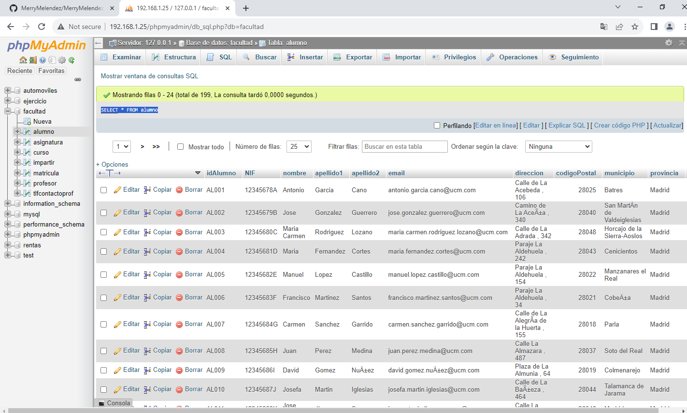
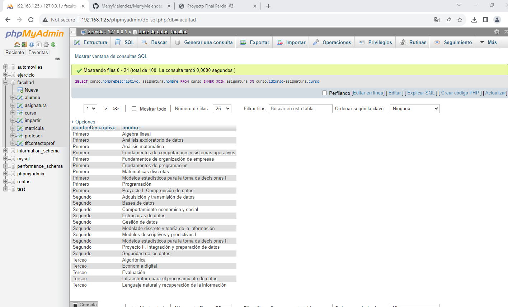
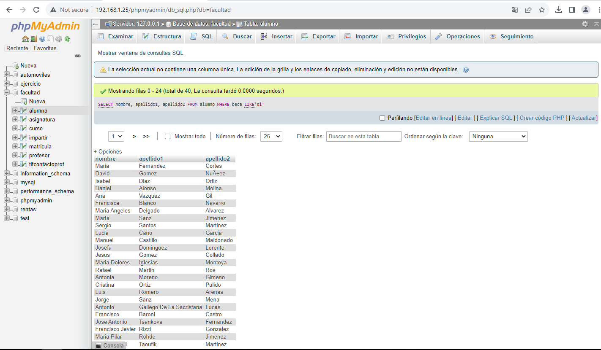
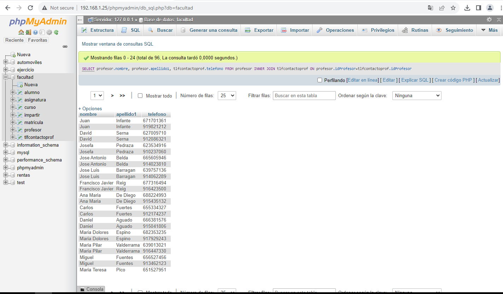
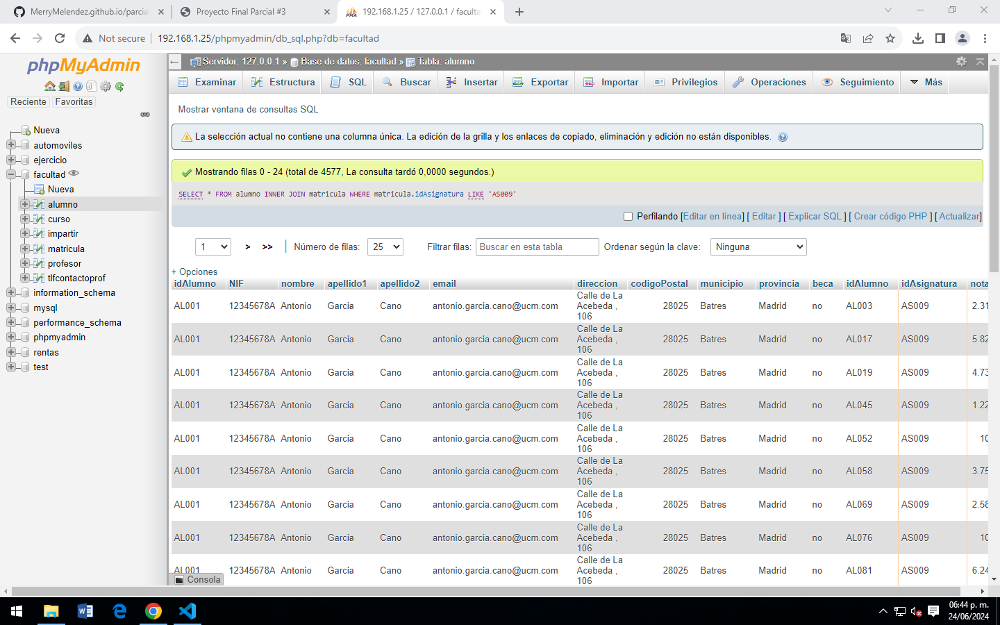
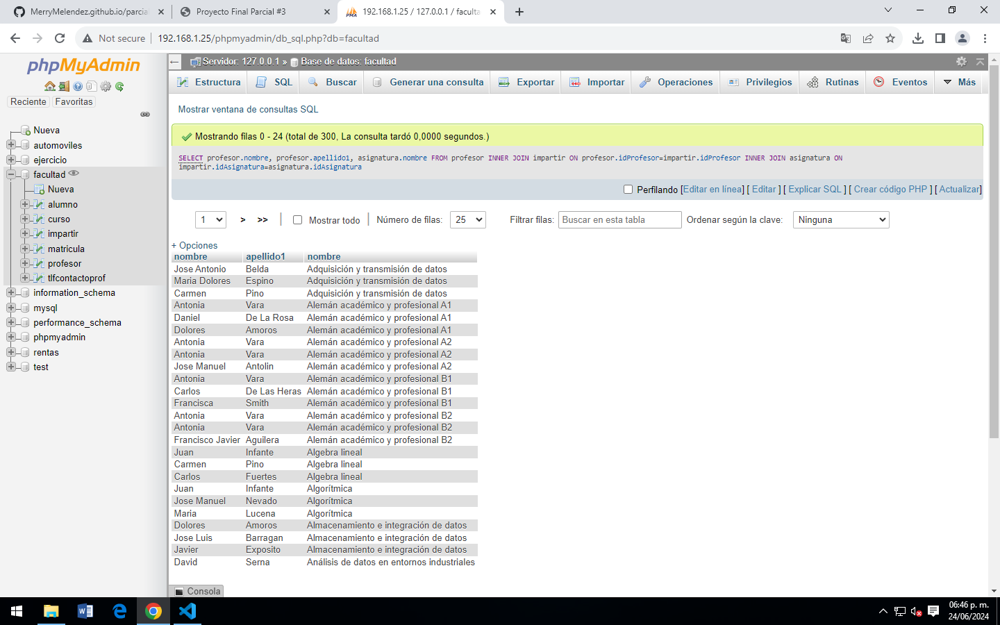
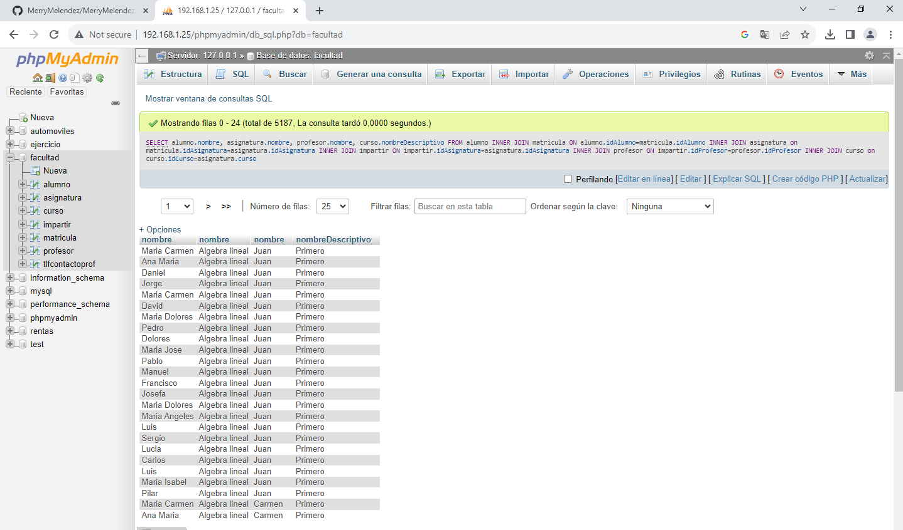

SELECT * FROM alumno
Cosulta 1: Obtener el listado de todos los alumnos de la falcultad
SELECT curso.nombreDescriptivo, asignatura.nombre FROM curso INNER JOIN asignatura ON curso.idCurso=asignatura.curso
Consulta 2: Obtener el listado de curso(nombre) y las asignaturas que tiene
SELECT nombre, apellido1, apellido2 FROM alumno WHERE beca LIKE'si'
Consulta 3: Obtener el listado (nombre y apellido) de alumnos que tengan beca
SELECT profesor.nombre, profesor.apellido1, tlfcontactoprof.telefono FROM profesor INNER JOIN tlfcontactoprof ON profesor.idProfesor=tlfcontactoprof.idProfesor
Consulta 4: Obtener el listado de profesores (nombre y apellido) y su número de control
SELECT * FROM alumno INNER JOIN matricula WHERE matricula.idAsignatura LIKE 'AS009'
Consulta 5: Obtener el listado de los alumnos (todos los campos) que están inscritos a la asignatura programación AS009
SELECT profesor.nombre, profesor.apellido1, asignatura.nombre FROM profesor INNER JOIN impartir ON profesor.idProfesor=impartir.idProfesor INNER JOIN asignatura ON impartir.idAsignatura=asignatura.idAsignatura
Consulta 6: Obtener el listado de profesores y asignaturas que comparten
Consulta 7: . Mostrar la asignatura que tiene más alumnos y su total
Consulta 8: Obtener el listado de alumnos que les da clases el profesor con id PR048 (José Manuel), sin importar en que asignatura este escrito
Consulta 9: Obtener el listado de curos, con asignatura y el maestro que las imparte
SELECT alumno.nombre, asignatura.nombre, profesor.nombre, curso.nombreDescriptivo FROM alumno INNER JOIN matricula ON alumno.idAlumno=matricula.idAlumno INNER JOIN asignatura on matricula.idAsignatura=asignatura.idAsignatura INNER JOIN impartir ON impartir.idAsignatura=asignatura.idAsignatura INNER JOIN profesor ON impartir.idProfesor=profesor.idProfesor INNER JOIN curso on curso.idCurso=asignatura.curso
Consulta 10: . Obtener el listado de alumnos con asignaturas que cursa, profesor que le imparte y curso al que pertenece
